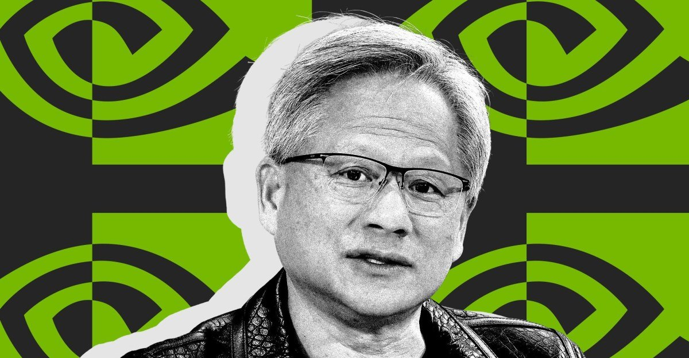
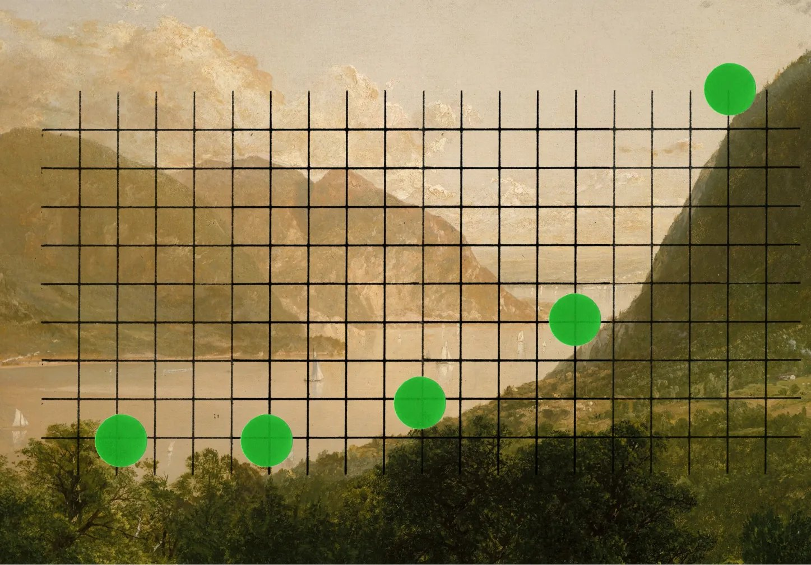
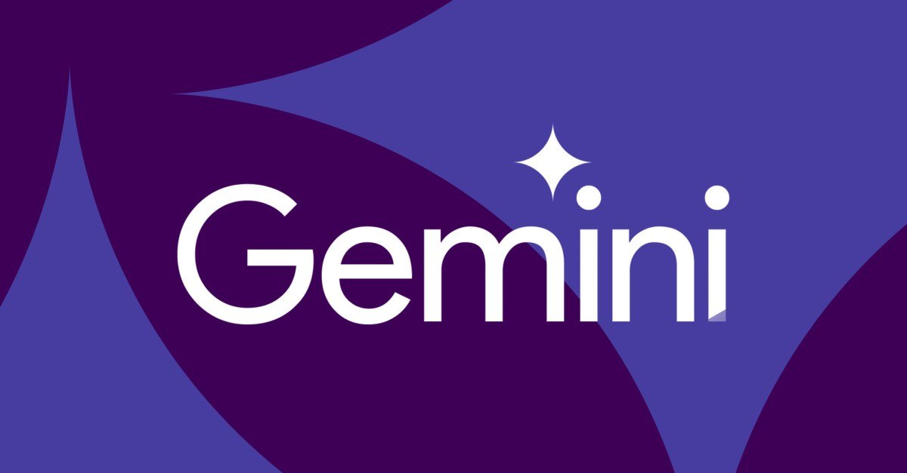

头条 一
黄仁勋辞去英伟达 CEO，CFO 克雷斯任临时 CEO

英伟达董事会周三深夜开会后接受黄仁勋辞呈，他同时辞去总裁和董事职务，即刻生效。CFO 科莱特·克雷斯出任临时 CEO，前新思科技 CEO 哈维·琼斯成为公司首位董事长。据路透社报道，他还与另一名员工有亲密关系。
昨天还是“据报道准备罢免”，今天已成事实。英伟达没有公布继任计划，市场只能先给这场风波定价。
来源：The Verge
英伟达换帅/Anthropic 路演/Gemini 4
黄仁勋辞去英伟达 CEO，CFO 克雷斯出任临时 CEO；Anthropic 启动 IPO 路演，Q3 营收 170 亿美元；谷歌把 Gemini 4 Hydrogen 设为搜索 AI 模式默认模型。

英伟达董事会周三深夜开会后接受黄仁勋辞呈，他同时辞去总裁和董事职务，即刻生效。CFO 科莱特·克雷斯出任临时 CEO，前新思科技 CEO 哈维·琼斯成为公司首位董事长。据路透社报道，他还与另一名员工有亲密关系。
昨天还是“据报道准备罢免”，今天已成事实。英伟达没有公布继任计划，市场只能先给这场风波定价。

据 Anthropic 招股页，路演自 11 月 10 日开始，定价预计 11 月 18 日，11 月 19 日在纳斯达克以 ANT 挂牌。Q3 营收 170 亿美元，同比增长超 12 倍；调整后营业利润率 15%，净亏损 233 亿美元，其中 219 亿美元为非现金项目。
AI 实验室第一次把完整账本摊给公开市场：收入很大，会计亏损也很大，估值变动本身成了亏损的主要来源。

谷歌周四发布 Gemini 4 Hydrogen，称它更擅长拆解多部分问题和带错别字的提问，并增加图表、地图等可视化回答。模型同日进入搜索、Gemini 应用、API 和 AI Studio，思考档位新增 xhigh。谷歌自称性能追平或超过部分同级竞品。
这次升级直接落在搜索的默认入口上。谁掌握默认模型，谁就先接住用户的问题。
总统在 Truth Social 发帖点名苹果前 CEO 库克。
风波从公司内部走向国会，标题级来源，待续。
英伟达对开源的支持，成了外界关心的问题。
帖子发于辞职前，浏览约 68 万。
作者已更新博客并向考古学者致谢。
涉及 Gemini、ChatGPT、Perplexity，细节见原文。
Notion 称影响约 1% 客户，两个月内第二次泄露。
HN 421 分，细节仅见 IT 之家，待核。
微软合同交付延期，财报日股价跌 17%。
用于发现、验证并修复漏洞，当日新增 643 星。
“技能”成为智能体的通用外挂格式。
Rust 官方公告，HN 334 分。
一个人走了，市值就会剧烈波动，说明 AI 产业链的治理还没跟上它的体量。
Anthropic 的亏损里 219 亿美元是估值变动带来的非现金项，读财报要先分清会计亏损和烧钱。
搜索默认模型一换，几亿人的日常提问就换了一个“大脑”。